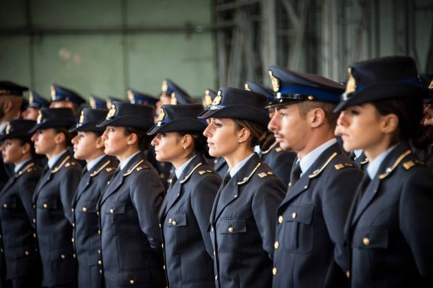
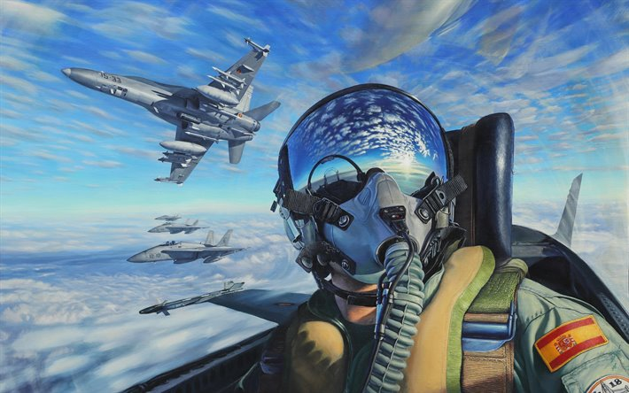

L'Aeronautica Militare (abbreviata in AM), in ambito internazionale Italian Air Force (abbreviata in ITAF) è, assieme a Esercito Italiano, Marina Militare ed Arma dei Carabinieri, una delle quattro forze armate italiane ed è, in particolare, quella destinata alle operazioni aeree.
COSA FACCIAMO?

L'Aeronautica Militare è una delle forze armate italiane.
Il compito istituzionale dell’Aeronautica è garantire il controllo e la difesa dello spazio aereo dell’Italia e, integrata con le altre forze armate nell’ambito dell’Unione Europea e della Nato, partecipa alle missioni di pace in tutto il mondo.
L'Aeronautica Militare gestisce inoltre il Servizio Meteorologico AM, al cui interno sono presenti vari Enti del Servizio Meteorologico.
Per lavorare in Aeronautica Militare è necessario partecipare a un bando di concorso.
Come per tutte le forze armate italiane, ai concorsi possono partecipare entrambi i sessi.
È possibile arruolarsi come volontarie e volontari in ferma prefissata, cioè prestando servizio per 1 o 4 anni - VFP1 o VFP4 - oppure in ferma permanente - VSP - per restare all’interno delle forze armate in modo stabile.
IL NOSTRO OBIETTIVO?

La formazione è il processo attraverso il quale si educano, migliorano ed indirizzano le risorse umane, dotando la Forza Armata di personale ricco di qualità morali, tecniche e professionali, che si riconosca nell’organizzazione ed operi in maniera efficace ed efficiente. Questo processo si realizza attraverso la comunicazione e comprensione di informazioni, conoscenze, modi di essere e di pensare, lungo tre direttrici: la maturazione delle caratteristiche personali (essere), la creazione di competenze (sapere) e lo sviluppo di capacità (saper fare). La formazione è quindi volta ad infondere ed approfondire in tutto il personale militare i valori e gli elementi fondanti dell’appartenenza all’Aeronautica Militare, attraverso didattiche mirate e prontamente indispensabili per l’espletamento di tutte le funzioni connesse con il proprio status (grado, ruolo e categoria). La formazione, completata con l’addestramento, costituisce il presupposto indispensabile per l’impiego.